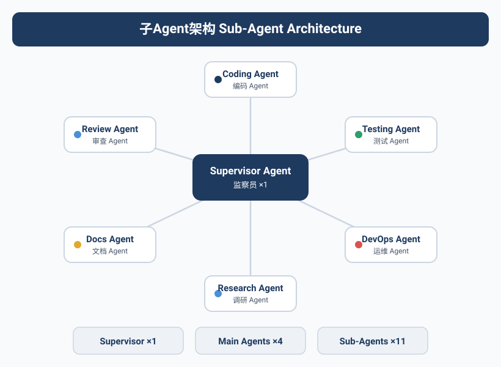
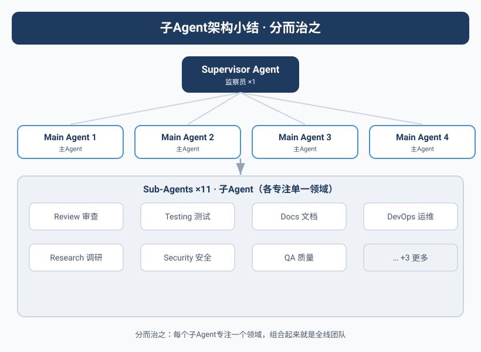

一个人忙不过来的Kai
Kai的效率问题发生在第三个月。
Yason给Kai布置了一个中型任务：重构用户通知模块，同时写API文档，同时Review另一个Agent的PR。三个任务并行。
Kai的反应跟人类同事一模一样——"好的，我开始做。"
然后Kai就卡住了。
它不是能力不够，是上下文窗口不够。三个任务的信息挤在一个上下文里，Kai开始混淆："这个API文档是给新模块写的还是给旧模块的？""我review的这个PR，跟重构任务冲突吗？"
Yason当时没意识到问题，以为Kai只是需要更多时间。直到他看了Kai的执行日志：
09:00 - 开始重构通知模块
09:15 - 切换到API文档任务（Yason说"尽快"）
09:20 - 切换到PR review（新任务优先）
09:45 - 回到重构，发现忘了重构思路，重新读代码
10:00 - 又切换到API文档
一上午，Kai切换了7次任务，每次切换都有"重新加载上下文"的成本。
人类的多任务切换有"切换成本"——从代码写到开会，大脑需要15分钟重新进入状态。Agent也一样——每次切换任务，上下文需要重新加载，Token成本翻倍。
工业界的子Agent实践
Yason在设计子Agent架构之前，研究了工业界已经跑通的模式。
OpenAI Codex的Manager-Worker模型是最直接的参考。Codex可以创建一个Manager Agent和最多8个Worker Agent，每个Worker运行在独立的云端沙箱中，拥有隔离的工作目录（worktree）。Manager负责拆解任务和分配，Worker只负责执行。
关键设计是隔离的工作目录——每个Worker只能看到自己的代码副本，不会相互干扰。当所有Worker完成后，Manager通过Pull Request合并所有变更。
Codex Manager (任务拆解 + 质量审查)
│
├─ Worker 1: 实现登录模块 (独立worktree)
├─ Worker 2: 实现注册模块 (独立worktree)
├─ Worker 3: 实现密码重置 (独立worktree)
├─ Worker 4: 写单元测试 (独立worktree)
├─ Worker 5: 写API文档 (独立worktree)
│
└─ 所有变更 → PR → 人工确认 → 合并
Claude Code Agent Teams则提供了另一种模式——子Agent之间共享工作区，通过文件锁（file locking）避免冲突。一个Agent在编辑文件时会给文件加锁，其他Agent可以读取但不能写入。这种模式适合需要紧密协作的场景（比如多个Agent一起重构一个模块），但Agent数量不宜超过5个。
Yason从这两者身上学到了各自适合的场景：Codex模式适合"分头执行互不依赖的任务"，Claude Code Teams模式适合"协作处理同一份代码"。
子Agent的诞生
Yason的解决方案：一个Agent管太宽了，给它配手下。
架构从扁平变成树形：
Kai不再是单纯的执行者。他变成了一个"小主管"——他自己负责架构决策和任务拆解，把具体的编码工作分配给OpenCode和Kimi来执行。
为什么是OpenCode和Kimi？
这不是随机选的。Yason发现不同的模型在不同任务上有各自的天赋：
| 任务类型 | 主模型 | 子Agent | 理由 |
|---|---|---|---|
| 代码生成 | Kai | OpenCode | 代码理解强，上下文窗口大 |
| 技术推理 | Kai | Kimi | 长文本推理强，适合分析 |
| 运营内容 | Max | Qwen | 性价比高，适合批量 |
| 数据采集 | Max | DeepSeek V4 | 速度快，成本低 |
每个主Agent（Parent Agent）拥有多个子Agent（Child Agent）。子Agent没有决策权——它们只负责执行具体任务，产出的结果交给父Agent做质量检查和整合。
每个子Agent的上下文隔离
子Agent架构中最容易被忽视的设计是上下文隔离。
Yason发现很多人在搭建子Agent时犯同一个错误：父Agent把整个对话历史传给子Agent。结果是子Agent的上下文被无关信息污染，成本翻倍，质量却没有提升。
正确的做法是：每次创建子Agent时，只给它一个干净的新上下文。父Agent只存储子Agent的"任务意图"和"结果摘要"，不存储子Agent的完整对话历史。
# ❌ 错误：全量传递
parent_context = {
"full_history": [...], # 包含父Agent之前的所有对话
"task": "写用户注册模块",
"child_context": full_history + task # 子Agent被污染
}
# ✅ 正确：上下文隔离
parent_context = {
"active_tasks": {
"child_1": {
"task": "写用户注册模块", # 只存意图
"summary": "已完成登录、注册、密码重置三个函数", # 只存摘要
"token_cost": 4520
},
"child_2": {
"task": "写单元测试",
"summary": "覆盖率达92%，3个边缘用例待确认",
"token_cost": 3810
}
}
}
# 子Agent自己的上下文是干净的
child_context = {
"task": "写用户注册模块，具体要求：...",
"conversation_history": [] # 从零开始
}
这个设计是Yason的Agent团队能从3个Agent扩展到10个Agent的关键。如果父Agent存储所有子Agent的完整历史，上下文窗口会随子Agent数量近似线性增长（每个子Agent约使父Agent Token ×2）。有了上下文隔离，父Agent的Token消耗是O(1)——无论多少个子Agent，父Agent只存意图和摘要。
上下文隔离是子Agent架构的基石。没有它，你每加一个子Agent，父Agent就多一分"记忆负担"。有了它，父Agent就像项目经理——知道每个人在做什么、做得怎么样，但不需要记住每个人的每一句话。
真实配置：Kai + OpenCode + Kimi
Yason的Kai配置文件中，子Agent部分是这样的：
# /opt/agents/kai/config.yaml
agent:
name: Kai
role: dev-lead
# 子Agent配置
children:
- name: opencode-worker
engine: opencode
model: deepseek-v4-flash
capabilities:
- code_generation
- code_review
- refactoring
max_retries: 3
timeout: 300
- name: kimi-worker
engine: kimi
model: kimi-k1.6
capabilities:
- technical_analysis
- document_reading
- architecture_research
max_retries: 2
timeout: 600
# 任务分配规则
routing:
- match: type == "code" || type == "review"
assign_to: opencode-worker
- match: type == "research" || type == "analyze"
assign_to: kimi-worker
- match: type == "architecture" || type == "design"
assign_to: self # Kai自己做
这个配置告诉Kai：代码类任务丢给OpenCode，研究分析类丢给Kimi，架构设计类自己来。
父Agent vs 子Agent：权力边界
子Agent架构最关键的设计不是"怎么分配任务"，而是父Agent和子Agent之间的权力边界。
Yason设计了几条清晰的规则：
父Agent的职责：
- 拆解任务，分配给合适的子Agent
- 检查子Agent的输出质量
- 整合多个子Agent的结果
- 处理子Agent的异常和失败
- 向Yason汇报最终结果
子Agent的职责：
- 接收父Agent分配的任务
- 执行具体操作（写代码、分析文档）
- 向父Agent汇报结果
- 遇到无法处理的错误时上报（不是自己硬扛）
有一条规则是Yason反复强调的：子Agent之间不直接通信。
# ❌ 不允许：子Agent之间直接对话
OpenCode → Kimi: "帮我看看这个API文档"
Kimi → OpenCode: "好，这是文档内容"
# ✅ 正确：通过父Agent中转
OpenCode → Kai: "需要API文档支持"
Kai → Kimi: "给OpenCode提供这份API文档"
Kimi → Kai: "文档内容如下"
Kai → OpenCode: "文档在这里，继续写代码"
子Agent平级通信 → 信息流不可控 → Agent之间的误解反弹。父Agent中转 → 信息流可追溯 → 出问题知道找谁。
分配策略：不只是"平均分"
给子Agent分任务不是简单地"谁闲着就丢给谁"。Yason用了一套成本意识的分派逻辑：
def assign_task(task, children):
# 1. 能力匹配（子Agent必须能处理这个任务）
candidates = [c for c in children if task.type in c.capabilities]
# 2. 当前负载（不能超载）
candidates = [c for c in candidates if c.current_load < c.max_load]
# 3. 成本最优（同样能做，选便宜的）
candidates.sort(key=lambda c: c.cost_per_task)
# 4. 历史成功率（同样的模型，选成功率高的）
candidates.sort(key=lambda c: c.success_rate, reverse=True)
# 5. 分配
return candidates[0] if candidates else self.handle_self(task)
这套逻辑的妙处在于——它不是死板的轮询分配。如果今天DeepSeek V4的API特别稳定，它就被多分一些任务；如果今天某个模型开始报错频繁，自动降权。
Fan-Out/Gather模式：子Agent的协作模式
当子Agent数量超过2个后，Yason发现需要一种标准的协作模式来管理"一对多"的任务派发。他用的就是Fan-Out/Gather模式。
Fan-Out阶段：父Agent将一个大任务拆解为N个独立子任务，同时派发给N个子Agent。
Gather阶段：所有子Agent完成后，父Agent收集结果，做冲突检测和整合。
Yason的实现代码：
async def fan_out_gather(task, children):
# Fan-Out: 拆解任务
subtasks = decompose_task(task, len(children))
# 并行派发
futures = []
for i, child in enumerate(children):
futures.append(execute_subtask(child, subtasks[i]))
# Gather: 等待所有子Agent完成
results = await asyncio.gather(*futures, return_exceptions=True)
# 检查冲突
conflicts = detect_conflicts(results)
if conflicts:
resolve_conflicts(conflicts, results)
# 整合结果
return integrate_results(results)
这个模式的关键在于子任务之间的独立性——如果子任务之间有依赖关系，Fan-Out/Gather就不适用（需要改为Pipeline模式）。Yason的经验是：80%的编码任务可以拆解为独立子任务，适合Fan-Out/Gather。剩下的20%需要链式处理。
递归陷阱：当子Agent有了子Agent
Yason碰到的第一个反模式是"递归陷阱"。
有个人问Yason："既然Kai可以有自己的子Agent，那Kai的子Agent能不能有自己的子Agent？"
Yason试了。
结果是灾难性的。
Kai → OpenCode Worker → Sub-Worker-1 → Sub-Worker-2 → ...
一条简单的"生成用户注册页面"任务，经过四层递归派发后，产生了42条中间消息、17个临时文件、2次冲突合并——最终输出的代码质量还不如Kai直接写的。
子Agent每深一层，沟通损耗和决策延迟指数级增长。Yason的经验法则：子Agent最多一层深度，不要再往下递归。
社区的子Agent实现
如果你不想从零搭建子Agent架构，社区有多个成熟的开源方案：
Claude Code /agent：这是最简单的子Agent方案。在Claude Code中，输入/agent "完成X任务"就能创建一个子Agent来执行指定任务。子Agent有自己的上下文窗口，完成后结果自动返回主会话。Yason经常用这个来做快速的原型验证。
LangGraph Sub-Graphs：LangGraph支持在一个图编排中嵌套子图（sub-graphs）。每个子图是一个独立的Agent，有自己的状态管理和节点逻辑。Yason在需要复杂编排的场景（比如多步骤的数据处理管道）中使用LangGraph的子图功能。
from langgraph.graph import StateGraph, SubGraph
# 定义一个子图Agent
sub_agent = StateGraph(AgentState)
sub_agent.add_node("analyze", analyze_node)
sub_agent.add_node("generate", generate_node)
sub_agent.add_edge("analyze", "generate")
# 在主图中嵌入子图
main_graph = StateGraph(MainState)
main_graph.add_node("code_agent", SubGraph(sub_agent))
main_graph.add_node("test_agent", SubGraph(test_sub_agent))
AutoGen的子Agent：Microsoft AutoGen支持嵌套的Agent团队（Team-in-Team），一个Team中可以包含其他Team作为子节点。适合需要多层抽象的场景。
Yason的建议是：从最简单的开始。先用Claude Code /agent感受一下子Agent的工作方式，再根据需要迁移到更复杂的框架。
子Agent架构的实战收益
经过一个月的运营，Yason对比了子Agent架构前后的KPI：
| 指标 | 扁平架构 | 子Agent架构 |
|---|---|---|
| 并行任务数 | 2-3个 | 5-8个 |
| 任务平均完成时间 | 45分钟 | 22分钟 |
| Token成本/任务 | \$1.20 | \$0.85 |
| Yason介入次数/天 | 8-10次 | 3-5次 |
Yason最意外的是成本反而降了——他原以为多一层Agent会增加开销。但实际情况是：子Agent用更便宜的模型处理专有任务（比如代码生成用DeepSeek V4 flash替代Kai用的Pro），总成本反而下降了。
子Agent架构的价值不是"做更多事"，而是"用更合适的资源做每一件事"。
本章小结
- 子Agent架构不是"加人手"，而是"用更合适的资源做每件事"
- 扁平架构更简单但扩展性差，层级架构扩展性好但复杂度高
- 每个子Agent必须有独立的上下文窗口隔离——主Agent只存意图+摘要，不存完整历史
- Fan-Out/Gather是子Agent架构的核心模式，异步执行 + 结果合并
- 社区有现成的子Agent实现：Claude Code /agent、LangGraph Sub-Graphs、AutoGen
下一章预告：Agent的能力边界在哪里——MCP工具链如何让Agent从"会说话的AI"变成"能动手的工人"。
本文来自专栏《给AI当老板》，完整系列持续更新中：GitHub - VokoForge/ai-prism
